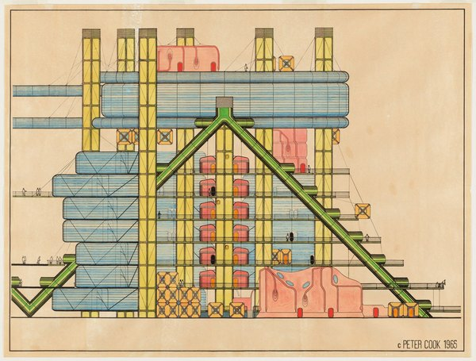
CRVI002939Peter Cook - Plug-in University Node, project (Elevation)
1965
1965
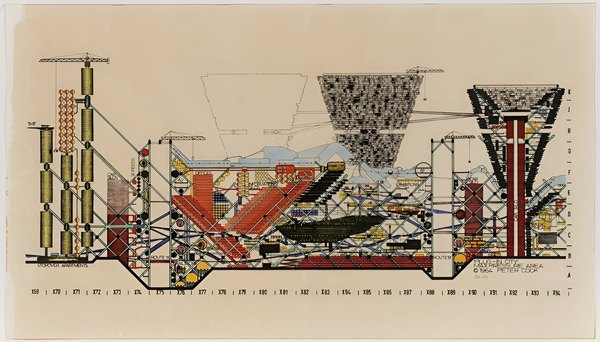
CRVI002940Peter Cook - Plug-In City — section

CRVI002941Peter Cook - Instant City
1970
1970
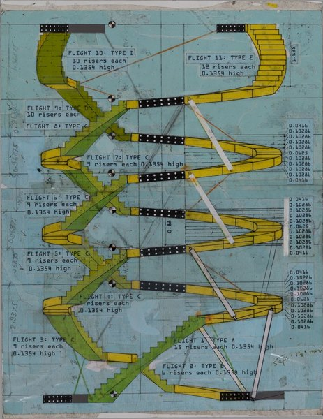
CRVI002942Michael Webb - Sin Centre — stair study
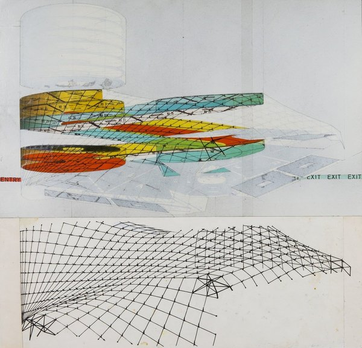
CRVI002943Michael Webb - study
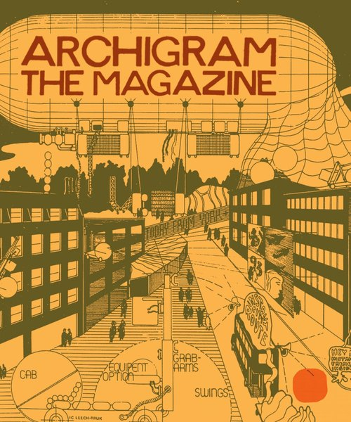
CRVI003270Archigram - Archigram: The Magazine — facsimile edition, cover
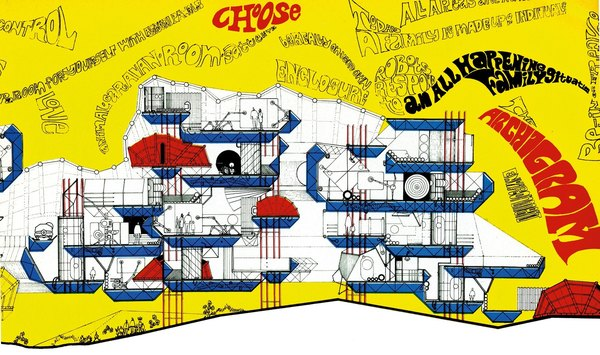
CRVI003271Warren Chalk, Peter Cook, Dennis Crompton, Ron Herron - Control and Choice Dwellings, Part Section
1967
1967
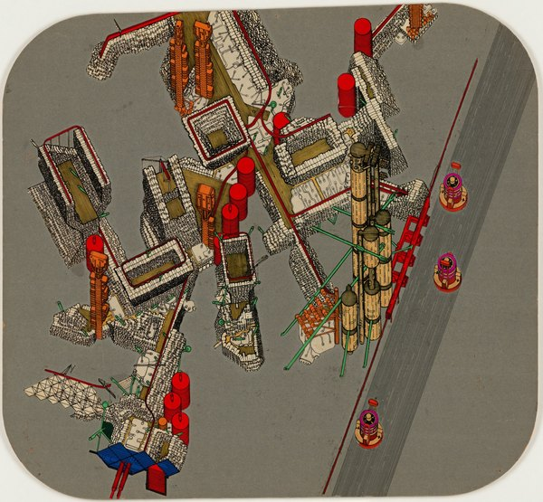
CRVI003272Peter Cook - Plug-In City, project (Axonometric)
1964
1964
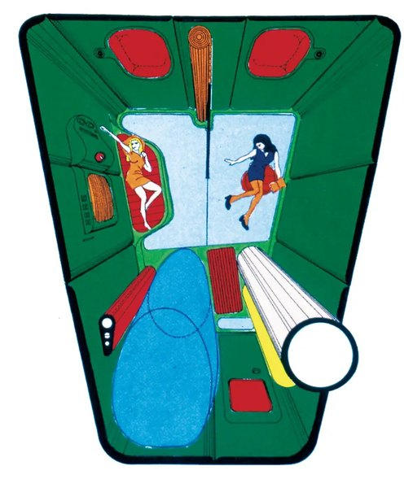
CRVI003273Warren Chalk - Capsule Homes, overhead view
1964
1964
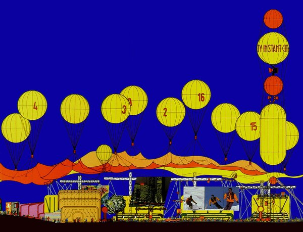
CRVI003274Peter Cook - Instant City
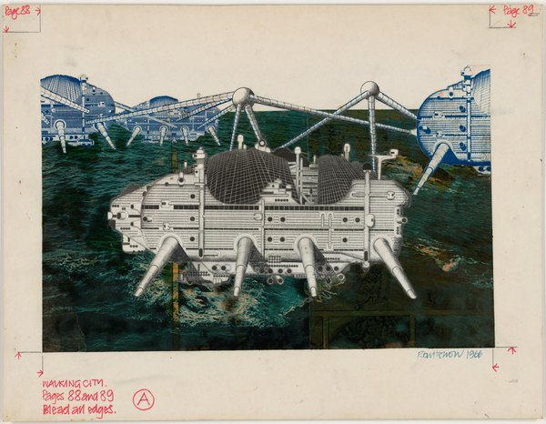
CRVI003275Ron Herron - Walking City on the Ocean, project (Exterior perspective)
1966
1966
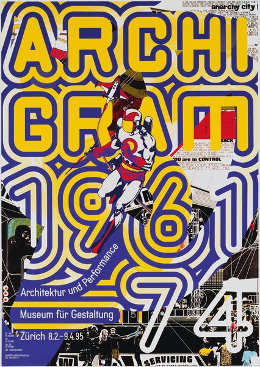
CRVI003276Ralph Schraivogel - Archigram 1961-74 (Museum für Gestaltung)
1995
1995
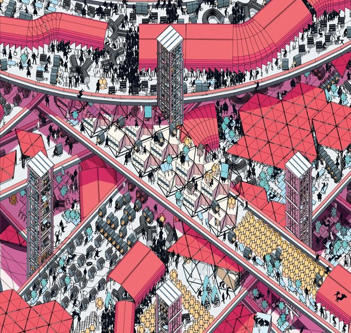
CRVI003277Archigram - Archigram magazine — spread
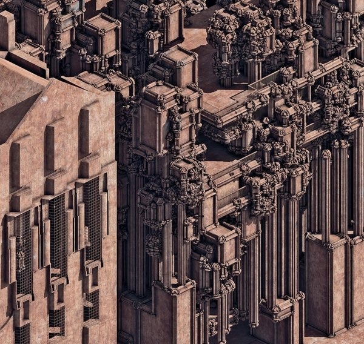
CRVI003278Archigram - Archigram magazine — spread
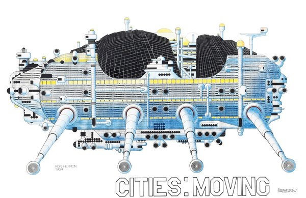
CRVI003279Ron Herron - Cities: Moving
1964
1964
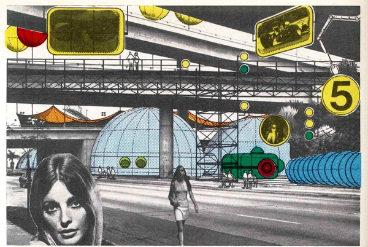
CRVI003353Archigram - Untitled
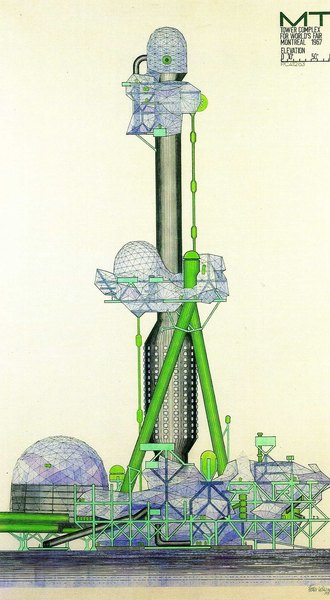
CRVI003354Archigram - Untitled
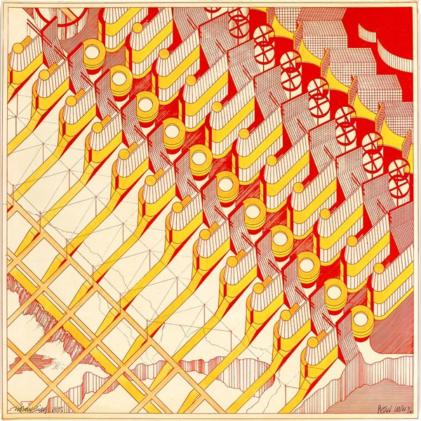
CRVI003355Archigram - Untitled